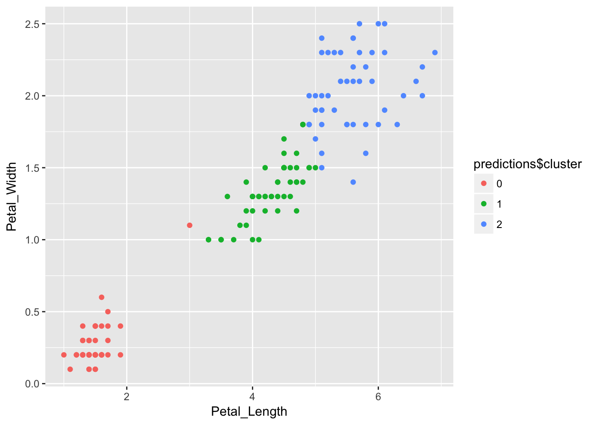

2018-01-29
We are excited to share that sparklyr 0.7 is now available on CRAN! Sparklyr provides an R interface to Apache Spark. It supports dplyr syntax for working with Spark DataFrames and exposes the full range of machine learning algorithms available in Spark. You can also learn more about Apache Spark and sparklyr in spark.rstudio.com and our new webinar series on Apache Spark. Features in this release:
In this blog post, we highlight Pipelines, new ML functions, and enhanced support for data serialization. To follow along in the examples below, you can upgrade to the latest stable version from CRAN with:
install.packages("sparklyr")The ML Pipelines API is a high-level interface for building ML workflows in Spark. Pipelines provide a uniform approach to compose feature transformers and ML routines, and are interoperable across the different Spark APIs (R/sparklyr, Scala, and Python.)
First, let’s go over a quick overview of terminology. A Pipeline consists of a sequence of stages—PipelineStages—that act on some data in order. A PipelineStage can be either a Transformer or an Estimator. A Transformer takes a data frame and returns a transformed data frame, whereas an Estimator take a data frame and returns a Transformer. You can think of an Estimator as an algorithm that can be fit to some data, e.g. the ordinary least squares (OLS) method, and a Transformer as the fitted model, e.g. the linear formula that results from OLS. A Pipeline is itself a PipelineStage and can be an element in another Pipeline. Lastly, a Pipeline is always an Estimator, and its fitted form is called PipelineModel which is a Transformer.
Let’s look at some examples of creating pipelines. We establish a connection and copy some data to Spark:
library(sparklyr)
library(dplyr)
# If needed, install Spark locally via `spark_install()`
sc <- spark_connect(master = "local")
iris_tbl <- copy_to(sc, iris)
# split the data into train and validation sets
iris_data <- iris_tbl %>%
sdf_partition(train = 2/3, validation = 1/3, seed = 123)Then, we can create a new Pipeline with ml_pipeline() and add stages to it via the %>% operator. Here we also define a transformer using dplyr transformations using the newly available ft_dplyr_transformer().
pipeline <- ml_pipeline(sc) %>%
ft_dplyr_transformer(
iris_data$train %>%
mutate(Sepal_Length = log(Sepal_Length),
Sepal_Width = Sepal_Width ^ 2)
) %>%
ft_string_indexer("Species", "label")
pipeline## Pipeline (Estimator) with 2 stages
## <pipeline_c75757b824f>
## Stages
## |--1 SQLTransformer (Transformer)
## | <dplyr_transformer_c757fa84cca>
## | (Parameters -- Column Names)
## |--2 StringIndexer (Estimator)
## | <string_indexer_c75307cbfec>
## | (Parameters -- Column Names)
## | input_col: Species
## | output_col: label
## | (Parameters)
## | handle_invalid: errorUnder the hood, ft_dplyr_transformer() extracts the SQL statements associated with the input and creates a Spark SQLTransformer, which can then be applied to new datasets with the appropriate columns. We now fit the Pipeline with ml_fit() then transform some data using the resulting PipelineModel with ml_transform().
pipeline_model <- pipeline %>%
ml_fit(iris_data$train)
# pipeline_model is a transformer
pipeline_model %>%
ml_transform(iris_data$validation) %>%
glimpse()## Observations: ??
## Variables: 6
## $ Petal_Length <dbl> 1.4, 1.3, 1.3, 1.0, 1.6, 1.9, 3.3, 4.5, 1.6, 1.5,...
## $ Petal_Width <dbl> 0.2, 0.2, 0.2, 0.2, 0.2, 0.2, 1.0, 1.7, 0.2, 0.2,...
## $ Species <chr> "setosa", "setosa", "setosa", "setosa", "setosa",...
## $ Sepal_Length <dbl> 1.482, 1.482, 1.482, 1.526, 1.548, 1.569, 1.589, ...
## $ Sepal_Width <dbl> 8.41, 9.00, 10.24, 12.96, 10.24, 11.56, 5.76, 6.2...
## $ label <dbl> 1, 1, 1, 1, 1, 1, 0, 2, 1, 1, 1, 0, 1, 1, 1, 1, 1...Now, let’s try to build a classification pipeline on the iris dataset.
Spark ML algorithms require that the label column be encoded as numeric and predictor columns be encoded as one vector column. We’ll build on the pipeline we created in the previous section, where we have already included a StringIndexer stage to encode the label column.
# define stages
# vector_assember will concatenate the predictor columns into one vector column
vector_assembler <- ft_vector_assembler(
sc,
input_cols = setdiff(colnames(iris_data$train), "Species"),
output_col = "features"
)
logistic_regression <- ml_logistic_regression(sc)
# obtain the labels from the fitted StringIndexerModel
labels <- pipeline_model %>%
ml_stage("string_indexer") %>%
ml_labels()
# IndexToString will convert the predicted numeric values back to class labels
index_to_string <- ft_index_to_string(sc, "prediction", "predicted_label",
labels = labels)
# construct a pipeline with these stages
prediction_pipeline <- ml_pipeline(
pipeline, # pipeline from previous section
vector_assembler,
logistic_regression,
index_to_string
)
# fit to data and make some predictions
prediction_model <- prediction_pipeline %>%
ml_fit(iris_data$train)
predictions <- prediction_model %>%
ml_transform(iris_data$validation)
predictions %>%
select(Species, label:predicted_label) %>%
glimpse()## Observations: ??
## Variables: 7
## $ Species <chr> "setosa", "setosa", "setosa", "setosa", "setos...
## $ label <dbl> 1, 1, 1, 1, 1, 1, 0, 2, 1, 1, 1, 0, 1, 1, 1, 1...
## $ features <list> [<1.482, 8.410, 1.400, 0.200>, <1.482, 9.000,...
## $ rawPrediction <list> [<-67.48, 2170.98, -2103.49>, <-124.4, 2365.8...
## $ probability <list> [<0, 1, 0>, <0, 1, 0>, <0, 1, 0>, <0, 1, 0>, ...
## $ prediction <dbl> 1, 1, 1, 1, 1, 1, 0, 2, 1, 1, 1, 0, 1, 1, 1, 1...
## $ predicted_label <chr> "setosa", "setosa", "setosa", "setosa", "setos...Another benefit of pipelines is reusability across programing languages and easy deployment to production. We can save a pipeline from R as follows:
ml_save(prediction_model, "path/to/prediction_model")When you call ml_save() on a Pipeline or PipelineModel object, all of the information required to recreate it will be saved to disk. You can then load it in the future to, in the case of a PipelineModel, make predictions or, in the case of a Pipeline, retrain on new data.
Sparklyr 0.7 introduces more than 20 new feature transformation and machine learning functions to include the full set of Spark ML algorithms. We highlight just a couple here.
Bisecting k-means is a variant of k-means that can sometimes be much faster to train. Here we show how to use ml_bisecting_kmeans() with iris data.
library(ggplot2)
model <- ml_bisecting_kmeans(iris_tbl, Species ~ Petal_Length + Petal_Width, k = 3, seed = 123)
predictions <- ml_predict(model, iris_tbl) %>%
collect() %>%
mutate(cluster = as.factor(prediction))
ggplot(predictions, aes(
x = Petal_Length,
y = Petal_Width,
color = predictions$cluster)
) +
geom_point()
ml_fpgrowth() enables frequent pattern mining at scale using the FP-Growth algorithm. See the Spark ML documentation for more details. Here we briefly showcase the sparklyr API.
# create an item purchase history dataset
items <- data.frame(items = c("1,2,5", "1,2,3,5", "1,2"),
stringsAsFactors = FALSE)
# parse into vector column
items_tbl <- copy_to(sc, items) %>%
mutate(items = split(items, ","))
# fit the model
fp_model <- items_tbl %>%
ml_fpgrowth(min_support = 0.5, min_confidence = 0.6)
# use the model to predict related items based on
# learned association rules
fp_model %>%
ml_transform(items_tbl) %>%
collect() %>%
mutate_all(function(x) sapply(x, paste0, collapse = ","))## # A tibble: 3 x 2
## items prediction
## <chr> <chr>
## 1 1,2,5 ""
## 2 1,2,3,5 ""
## 3 1,2 5Various improvements were made to better support serialization and collection of data frames. Most notably, dates are now supported:
copy_to(sc, nycflights13::flights) %>%
select(carrier, flight, time_hour)## # Source: lazy query [?? x 3]
## # Database: spark_connection
## carrier flight time_hour
## <chr> <int> <dttm>
## 1 UA 1545 2013-01-01 05:00:00
## 2 UA 1714 2013-01-01 05:00:00
## 3 AA 1141 2013-01-01 05:00:00
## 4 B6 725 2013-01-01 05:00:00
## 5 DL 461 2013-01-01 06:00:00
## 6 UA 1696 2013-01-01 05:00:00
## 7 B6 507 2013-01-01 06:00:00
## 8 EV 5708 2013-01-01 06:00:00
## 9 B6 79 2013-01-01 06:00:00
## 10 AA 301 2013-01-01 06:00:00
## # ... with more rowsWe can’t wait to see what you’ll build with the new features! As always, comments, issue reports, and contributions are welcome on the sparklyr GitHub repo.